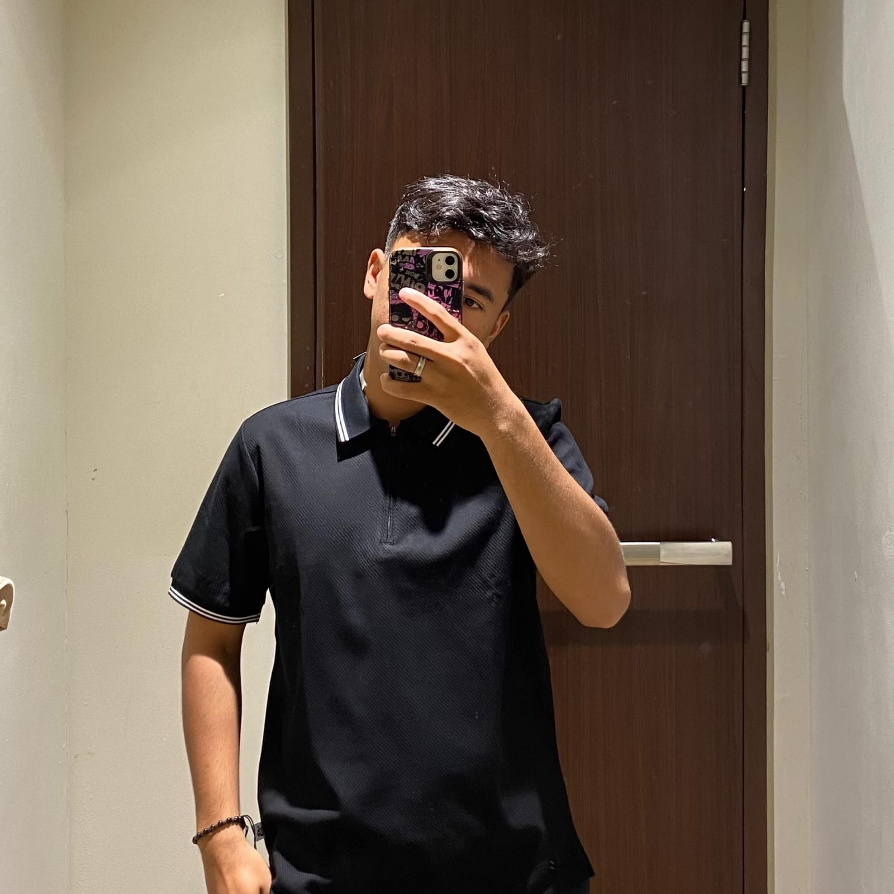
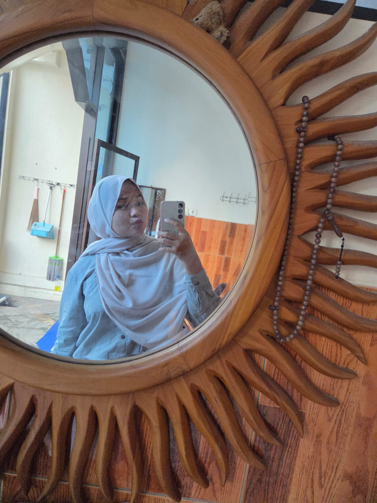
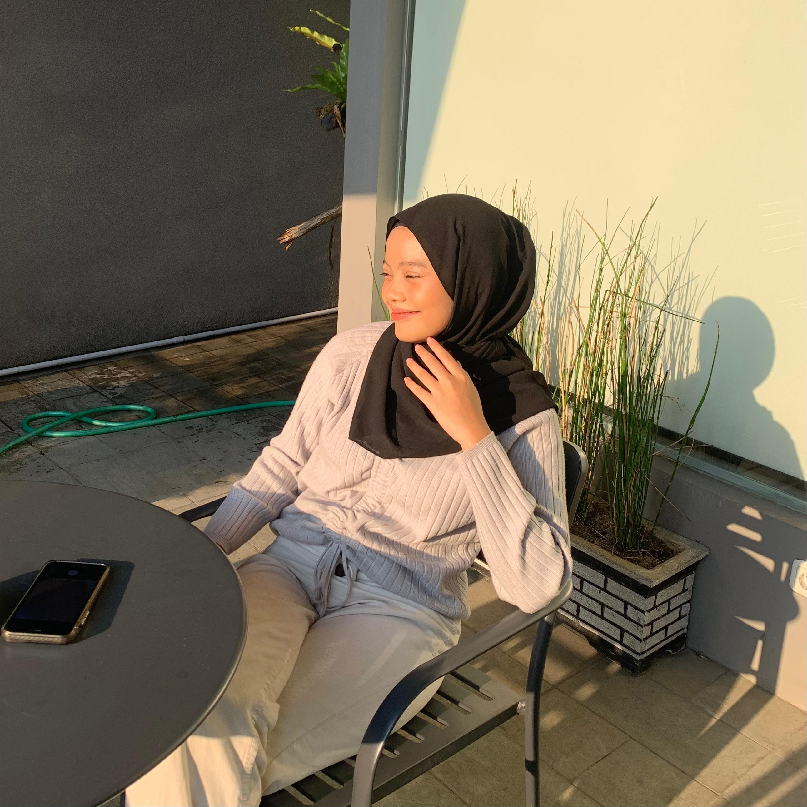
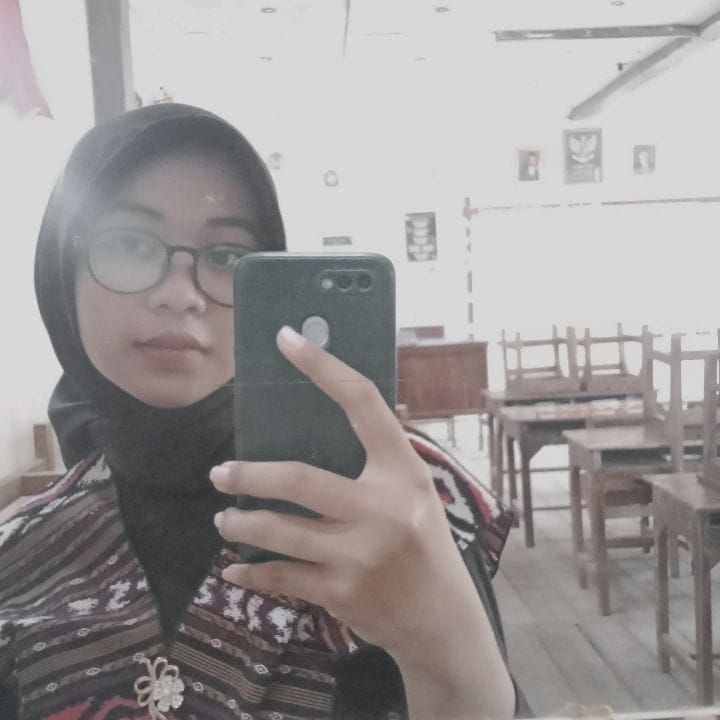

Profil Anggota Tim
Kenali anggota tim dan pencapaian mereka selama program matrikulasi

Muhamad Ezi Bahri
NIM: A11.2025.16428
Sertifikat Code.org
Pembelajaran Utama:
- Menguasai dasar-dasar pemrograman dengan Python
- Memahami konsep algoritma dan struktur data
- Mengembangkan kemampuan problem solving
Quote Pengalaman:
"Program matrikulasi membuka mata saya tentang dunia teknologi dan memberikan fondasi yang kuat untuk perjalanan akademik selanjutnya."

Sahla Nur laili
NIM: A.11.2025.16430
Sertifikat Code.org
Pembelajaran Utama:
- Belajar HTML, CSS, dan JavaScript dasar
- Memahami prinsip-prinsip desain web yang baik
- Meningkatkan kemampuan kerja sama tim
Quote Pengalaman:
"Matrikulasi mengajarkan saya bahwa coding bukan hanya tentang menulis kode, tetapi juga tentang memecahkan masalah dengan kreatif."
Muhammad Satriyo Galih Wicaksono
NIM: A11.2025.16441
Sertifikat Code.org
Pembelajaran Utama:
- Menguasai konsep database dan SQL dasar
- Memahami metodologi pengembangan software
- Mengembangkan soft skills komunikasi
Quote Pengalaman:
"Langkah kecil dalam matrikulasi hari ini akan menjadi pijakan besar untuk pencapaian esok hari.."

Annisa Pradipta Martha
NIM: A11.2025.16450
Sertifikat Code.org
Pembelajaran Utama:
- Belajar UI/UX design principles
- Memahami responsive web design
- Meningkatkan kemampuan presentasi
Quote Pengalaman:
"Langkah kecil dalam matrikulasi hari ini akan menjadi pijakan besar untuk pencapaian esok hari.."

Della Puspitasari
NIM: A11.2025.16422
Sertifikat Code.org
Pembelajaran Utama:
- Menguasai konsep database dan SQL dasar
- Memahami metodologi pengembangan software
- Mengembangkan soft skills komunikasi
Quote Pengalaman:
"Matrikulasi memberi saya kepercayaan diri untuk mengejar passion saya di bidang teknologi dan desain."